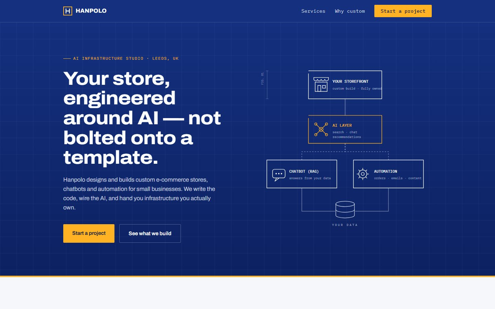
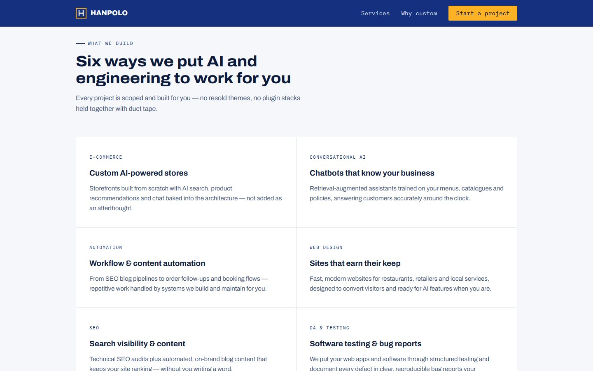
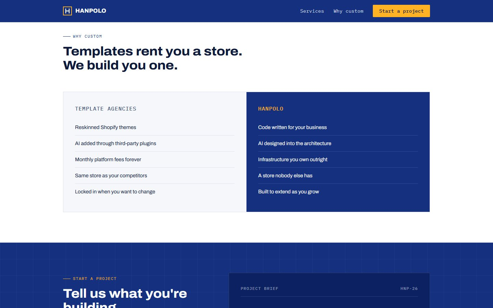
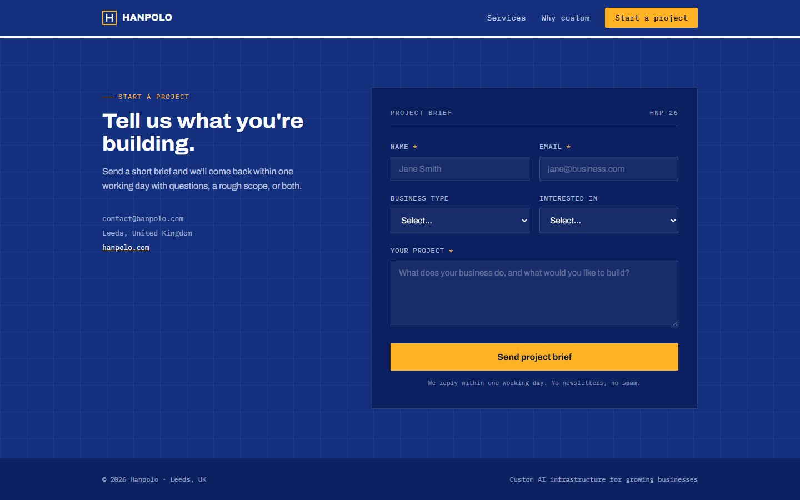
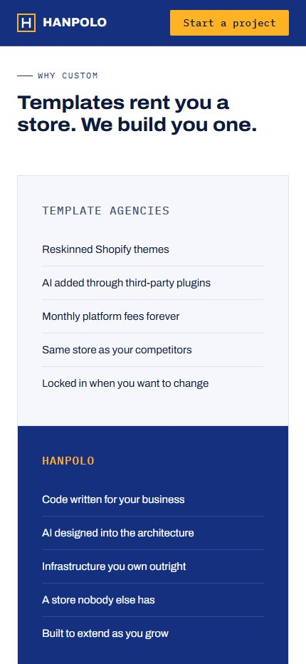
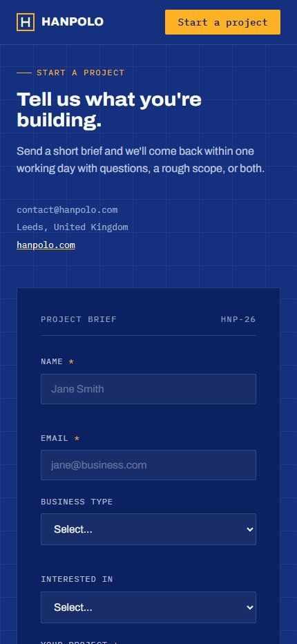

Case study · 2026
Hanpolo — website for an AI infrastructure studio
A distinctive, engineering-led web presence for a Leeds-based studio that builds custom e-commerce, AI chatbots and automation for small businesses.

01 — Overview
The brief
Hanpolo builds bespoke online stores with AI integrated at the architecture level, alongside chatbots, automation, SEO and QA services. Its audience is small business owners who are rarely technical and are used to template-based agencies.
The objective was a website that explains a sophisticated technical offer in plain terms, clearly differentiates Hanpolo from template providers, and converts interest into qualified project enquiries.
02 — Challenge
Key considerations
- Complexity made clearConcepts such as retrieval-augmented chatbots and AI layers had to be understood at a glance.
- Clear differentiationPositioning custom, owned infrastructure against low-cost Shopify themes and plugin stacks.
- Breadth without dilutionPresenting six distinct services while keeping one coherent proposition.
- Lead qualityCapturing enough context up front to scope projects efficiently.

03 — Solution
What was delivered
- Blueprint art directionA navy grid, amber accents and monospace annotations that signal engineering precision.
- Architecture diagram heroA custom illustration showing how storefront, AI layer, chatbot, automation and data connect.
- Modular services gridEach service framed by category, benefit and a concise description.
- Comparison section“Templates rent you a store. We build you one.” — the value proposition side by side.
- Lead-qualifying brief formCaptures business type and service interest, so every enquiry arrives ready to scope.
- Responsive buildA lightweight, fully responsive front end, with the diagram reflowing for mobile.






04 — Outcome
The result
Hanpolo now has a brand presence as considered as the systems it builds. The site makes a technical offer understandable within seconds, sets the studio clearly apart from template agencies, and channels visitors into structured, ready-to-scope project briefs.
- Art direction
- Custom SVG illustration
- Responsive design
- Lead-qualification form
- Conversion-led structure
Hiring?